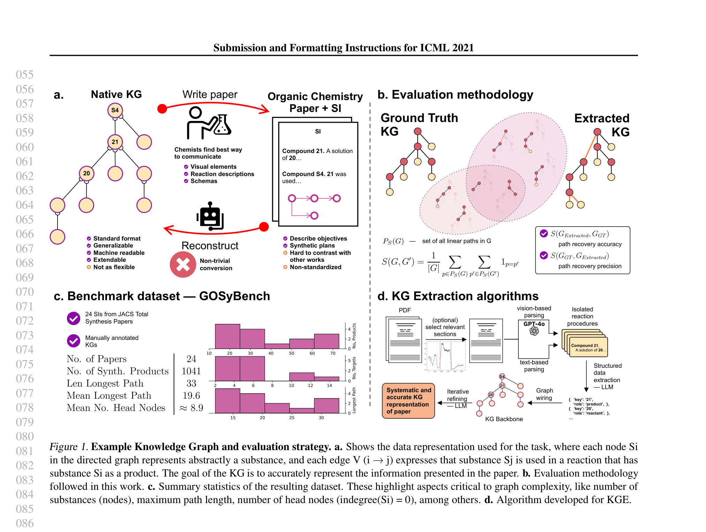

GOSyBench: Knowledge Graph Extraction from Total Synthesis Documents

Scientific knowledge is often locked inside long, unstructured documents. Extracting structured knowledge graphs from these papers could accelerate discovery — but how well can current AI systems actually do this?
We introduce GOSyBench (Graph of Organic Synthesis Benchmark), a benchmark for evaluating knowledge graph extraction from total synthesis documents. Total synthesis papers have an inherent graph-like structure: starting materials are transformed through reaction steps into target molecules, making them a natural testbed for KGE.
We evaluated several LLMs (GPT-4, Claude, Mistral) and vision language models (GPT-4o) on this task. Our best-performing system achieved 73% recovery accuracy and 59% precision, showing that while LLMs can extract meaningful chemical knowledge, there is still substantial room for improvement.
Presented at the ICML 2024 AI4Science Workshop and the 1st Workshop on Language + Molecules (L+M 2024).